Código
# instalar/cargar paquetes
sketchy::load_packages(
c("ggplot2",
"viridis",
"lmerTest",
"sjPlot")
)
Comprender la inferencia estadística a través de los modelos de regresión lineal
Familiarizarse con la construcción de modelos lineales
Extender los modelos lineales a diferentes estructuras de datos
Paquetes a utilizar en este manual:
# instalar/cargar paquetes
sketchy::load_packages(
c("ggplot2",
"viridis",
"lmerTest",
"sjPlot")
)Las regresiones lineales se basan en la ecuación lineal y = mx + b que aprendimos en el colegio. La representación formal tiene este aspecto:
\(\hat{Y}\): valor predicho (esperado) de la variable respuesta
\(\beta_{0}\): intercepto (valor esperado de la respuesta cuando \(x_{1} = 0\))
\(\beta_{1}\): estimado de la magnitud del efecto de \(x_{1}\) en \(\hat{Y}\) (también conocido como tamaño de efecto, coeficiente o simplemente “estimado”)
\(x_{1}\): variable predictora
Los valores observados de la respuesta (\(Y\)) no caen exactamente sobre la línea, por lo que el modelo completo incluye un término de error (\(\varepsilon\)) que se asume con distribución normal y promedio 0:
El objetivo más común de una regresión lineal es la estimación de los valores de \(\beta_{*}\). Esto se consigue encontrando la línea recta que mejor se ajusta y que representa la asociación entre un predictor y la respuesta:

Estos \(\beta_{*}\) son el tamaño de efecto estimado del predictor correspondiente (por ejemplo, \(\beta_{1}\) es el tamaño de efecto \(x_{1}\)). Su valor representa el cambio promedio en \(\hat{Y}\) (en unidades de \(Y\)) por cada unidad de cambio en el predictor correspondiente (\(x_{*}\)). Por lo tanto, la hipótesis nula es que esos \(\beta_{*}\) no son diferentes de 0 (\(\mathcal{H}_0: \beta_1 = 0\)):
lo que equivale a esto:
Por ejemplo, un modelo de regresión con este resultado:

Para sacar el máximo provecho de los modelos lineales necesitamos sentirnos cómodos con ellos. Empezaremos explorando la función de regresión lineal de R lm(). En R la mayoría de los modelos lineales y sus extensiones comparten formatos comunes de entrada de datos y resultados, lo que facilita su aplicación una vez que entendemos sus fundamentos.
Utilizaremos el juego de datos ‘trees’ que viene por defecto con R. ‘trees’ proporciona medidas del diámetro (etiquetado como ‘Girth’), altura y volumen de 31 cerezos talados:
head(trees)| Girth | Height | Volume |
|---|---|---|
| 8.3 | 70 | 10.3 |
| 8.6 | 65 | 10.3 |
| 8.8 | 63 | 10.2 |
| 10.5 | 72 | 16.4 |
| 10.7 | 81 | 18.8 |
| 10.8 | 83 | 19.7 |
La función básica de R para construir un modelo lineal es lm(). Veamos los componentes básicos de un modelo de regresión utilizando lm():

Podemos correr este modelo para ver el resultado:
reg_mod <- lm(formula = Height ~ Girth, data = trees)
summary(reg_mod)
Call:
lm(formula = Height ~ Girth, data = trees)
Residuals:
Min 1Q Median 3Q Max
-12.582 -2.769 0.316 2.473 9.946
Coefficients:
Estimate Std. Error t value Pr(>|t|)
(Intercept) 62.031 4.383 14.15 1.5e-14 ***
Girth 1.054 0.322 3.27 0.0028 **
---
Signif. codes: 0 '***' 0.001 '**' 0.01 '*' 0.05 '.' 0.1 ' ' 1
Residual standard error: 5.54 on 29 degrees of freedom
Multiple R-squared: 0.27, Adjusted R-squared: 0.244
F-statistic: 10.7 on 1 and 29 DF, p-value: 0.00276
Esto es lo que significan los elementos de la salida:
Llamada (call): la función y los parámetros que se utilizaron para crear el modelo
Residuos (residuals): distribución de los residuos. Los residuos son la diferencia entre lo que predijo el modelo y el valor real de y. Esta es una representación gráfica de los residuos:

Coeficientes (coefficients): contiene los tamaños de efecto (‘Estimate’), una medida de su incertidumbre (‘Std. Error’), el estadístico asociado (‘t value’) y el valor p (‘Pr(>|t|)’). Los tamaños de efecto o estimados se dan como el cambio promedio en y por cada aumento de 1 unidad en x. Para este ejemplo el estimado es de 1,0544 \(pies / pulgada\) (la altura está medida en pies y el diámetro en pulgadas). Tener en cuenta las unidades es fundamental para interpretar biológicamente el resultado: en promedio, por cada aumento de 1 pulgada en el diámetro se espera un aumento de 1,0544 pies en la altura.
Error estándar de los residuos (residual standard error): es la estimación de la desviación estándar del término de error (\(\sigma\)), es decir, cuánto se alejan en promedio las observaciones de la línea de regresión (en unidades de y). Se acompaña de los grados de libertad del modelo (número de observaciones menos número de parámetros estimados)
R-cuadrado múltiple (multiple R-squared): el coeficiente de determinación, que es la proporción de la varianza de la respuesta que es explicada por los predictores del modelo (va de 0 a 1)
R-cuadrado ajustado (adjusted R-squared): similar al ‘R-cuadrado múltiple’ pero penalizado por el número de parámetros
Estadístico F (F-statistic): estadístico para una prueba global que evalúa si al menos uno de los coeficientes de los predictores es distinto de cero
Valor de p (p-value): valor p asociado al estadístico F. Es la probabilidad de obtener un estadístico F igual o más extremo que el observado si la hipótesis nula (todos los coeficientes de los predictores son 0) fuera cierta
Utilizaremos lm() para mostrar la flexibilidad de los modelos de regresión. Los componentes de regresión se añadirán gradualmente para que podamos tomarnos el tiempo de entender cada uno de ellos así como los correspondientes cambios en la salida de la regresión.
Podemos crear 2 variables numéricas no relacionadas así:
# definir semilla
set.seed(123)
# numero de observaciones
n <- 50
# variables aleatorias
y <- rnorm(n = n, mean = 0, sd = 1)
x1 <- rnorm(n = n, mean = 0, sd = 1)
# crear data frame
xy_datos <- data.frame(x1, y)
Estas dos variables pueden introducirse en un modelo de regresión para evaluar la asociación entre ellas:
# construir modelo
xy_mod <- lm(formula = y ~ x1, data = xy_datos)
# graficar
ggplot(xy_datos, aes(x = x1, y = y)) +
geom_smooth(method = "lm", se = FALSE) +
geom_point() # graficar puntos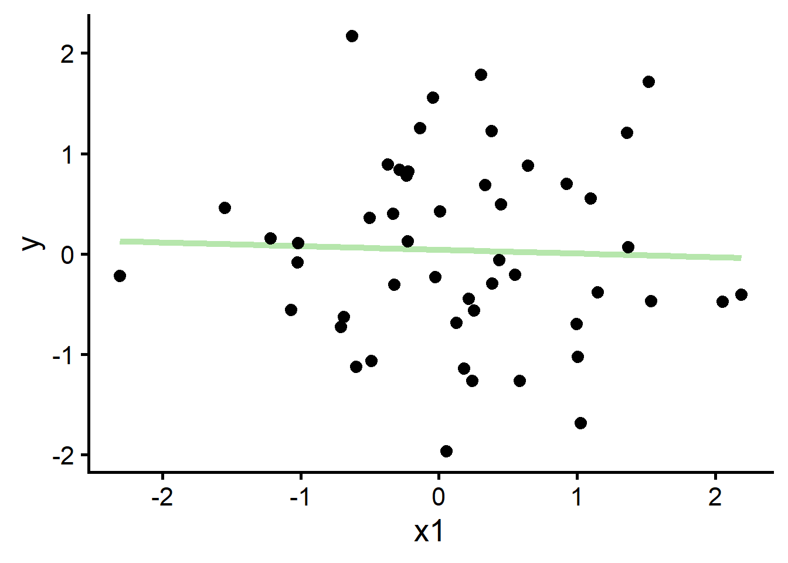
Que es equivalente a esto:
Imprimamos el resumen de este modelo:
summary(xy_mod)
Call:
lm(formula = y ~ x1, data = xy_datos)
Residuals:
Min 1Q Median 3Q Max
-2.004 -0.624 -0.123 0.687 2.106
Coefficients:
Estimate Std. Error t value Pr(>|t|)
(Intercept) 0.0398 0.1340 0.30 0.77
x1 -0.0367 0.1475 -0.25 0.80
Residual standard error: 0.935 on 48 degrees of freedom
Multiple R-squared: 0.00129, Adjusted R-squared: -0.0195
F-statistic: 0.0618 on 1 and 48 DF, p-value: 0.805
… y graficar los tamaños de efecto. Como haremos este gráfico varias veces, conviene crear una función que lo haga a partir de cualquier modelo:
# funcion para graficar tamanos de efecto con intervalos de confianza
graficar_efectos <- function(modelo) {
ci_df <- data.frame(param = names(coef(modelo)),
est = coef(modelo),
li = confint(modelo)[, 1],
ls = confint(modelo)[, 2])
ggplot(ci_df, aes(x = param, y = est)) +
geom_hline(yintercept = 0, color = "red", lty = 2) +
geom_pointrange(aes(ymin = li, ymax = ls)) +
labs(x = "Parámetro", y = "Tamaño de efecto") +
coord_flip()
}
graficar_efectos(xy_mod)
Deberíamos “diagnosticar” la idoneidad del modelo inspeccionando más de cerca la distribución de los residuos. La función plot_model() del paquete sjPlot hace un buen trabajo para crear gráficos de diagnóstico para modelos lineales:
plot_model(xy_mod, type = "diag")Warning: Using `size` aesthetic for lines was deprecated in ggplot2 3.4.0.
ℹ Please use `linewidth` instead.
ℹ The deprecated feature was likely used in the sjPlot package.
Please report the issue at <https://github.com/strengejacke/sjPlot/issues>.[[1]]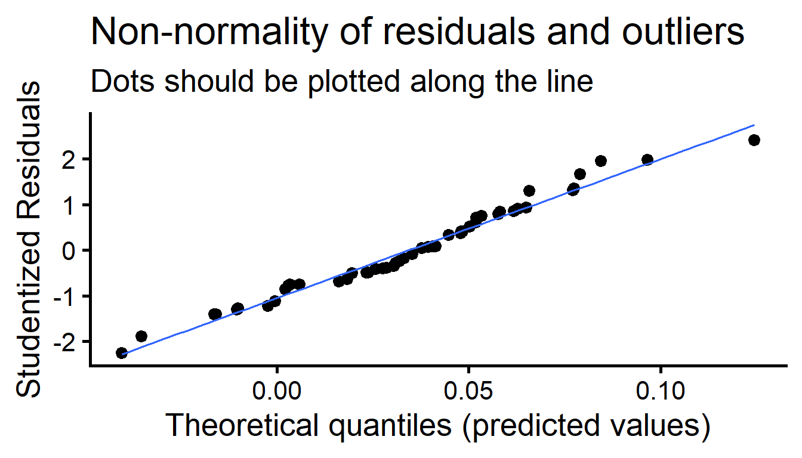
[[2]]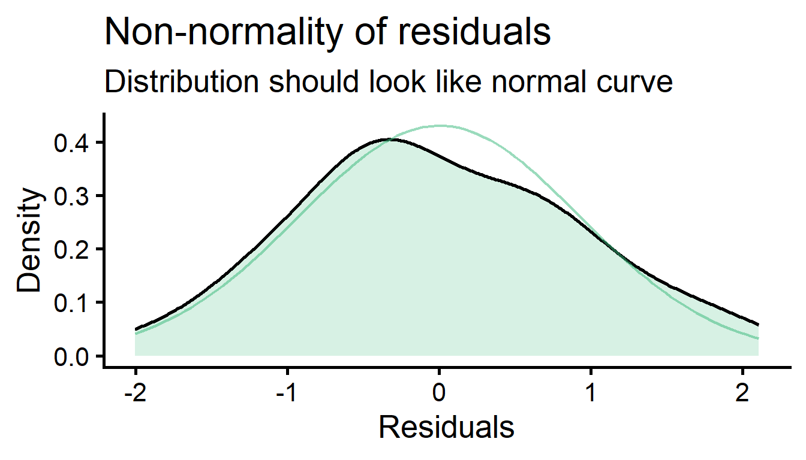
[[3]]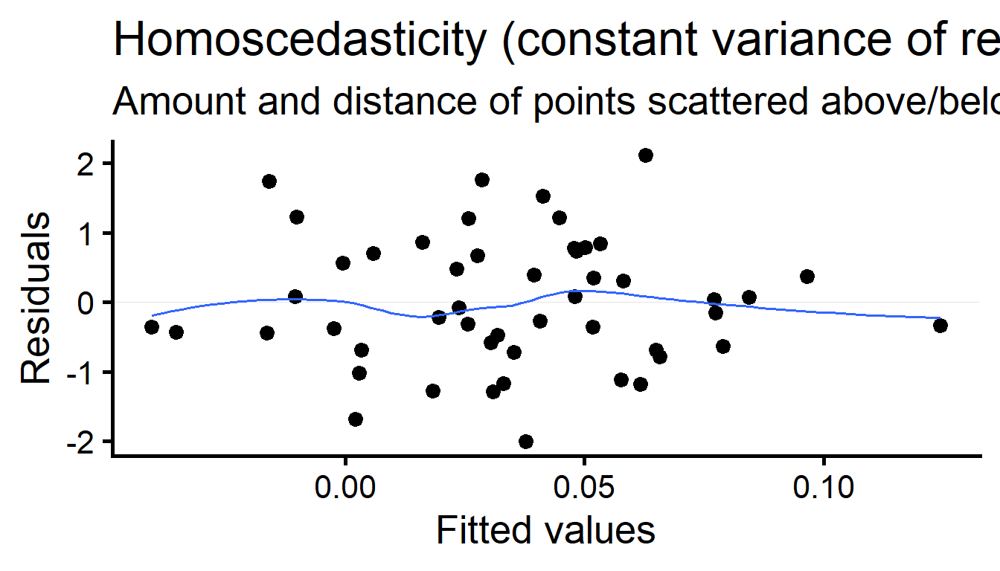
Cuadro con coeficientes:
Estimate Std. Error t value Pr(>|t|)
(Intercept) 0.039774 0.13396 0.29690 0.76782
x1 -0.036679 0.14750 -0.24867 0.80467
En este ejemplo hemos añadido un predictor al modelo, por lo que hemos obtenido una estimado adicional (y una fila extra, ‘x1’)
El modelo nos dice que la estimación de ‘x1’ es -0.0367 y que no es significativamente diferente de 0 (p = 0.805)
Ejercicio 3
Cambie el argumento mean en la llamada a la función rnorm() en la simulación para el modelo con un predictor no asociado por un valor distinto de 0 y observe cómo cambian los valores en la tabla de coeficientes
Cambie el argumento sd en la llamada a la función rnorm() por un valor más alto y observe cómo cambian los valores en la tabla de coeficientes
Podemos utilizar la fórmula del modelo lineal anterior para simular dos variables continuas asociadas así:
# definir semilla
set.seed(123)
# numero de observaciones
n <- 50
b0 <- -4
b1 <- 3
error <- rnorm(n = n, sd = 3)
# variables aleatorias
x1 <- rnorm(n = n, mean = 0, sd = 1)
y <- b0 + b1 * x1 + error
# crear data frame
xy_datos2 <- data.frame(x1, y)
Note que también hemos añadido un término de error, por lo que la asociación no es perfecta. Vamos a correr el modelo y graficar la asociación entre las dos variables:
# construir modelo
xy_mod2 <- lm(formula = y ~ x1, data = xy_datos2)
# graficar
ggplot(xy_datos2, aes(x = x1, y = y)) +
geom_smooth(method = "lm", se = FALSE) +
geom_point() # graficar puntos
La fórmula es la misma que la del modelo anterior:
Este es el resumen del modelo:
summary(xy_mod2)
Call:
lm(formula = y ~ x1, data = xy_datos2)
Residuals:
Min 1Q Median 3Q Max
-6.01 -1.87 -0.37 2.06 6.32
Coefficients:
Estimate Std. Error t value Pr(>|t|)
(Intercept) -3.881 0.402 -9.66 7.9e-13 ***
x1 2.890 0.442 6.53 3.9e-08 ***
---
Signif. codes: 0 '***' 0.001 '**' 0.01 '*' 0.05 '.' 0.1 ' ' 1
Residual standard error: 2.8 on 48 degrees of freedom
Multiple R-squared: 0.471, Adjusted R-squared: 0.459
F-statistic: 42.7 on 1 and 48 DF, p-value: 3.85e-08
.. el gráfico con los tamaños de efecto:
graficar_efectos(xy_mod2)
… y los gráficos diagnósticos del modelo:
plot_model(xy_mod2, type = "diag")[[1]]
[[2]]
[[3]]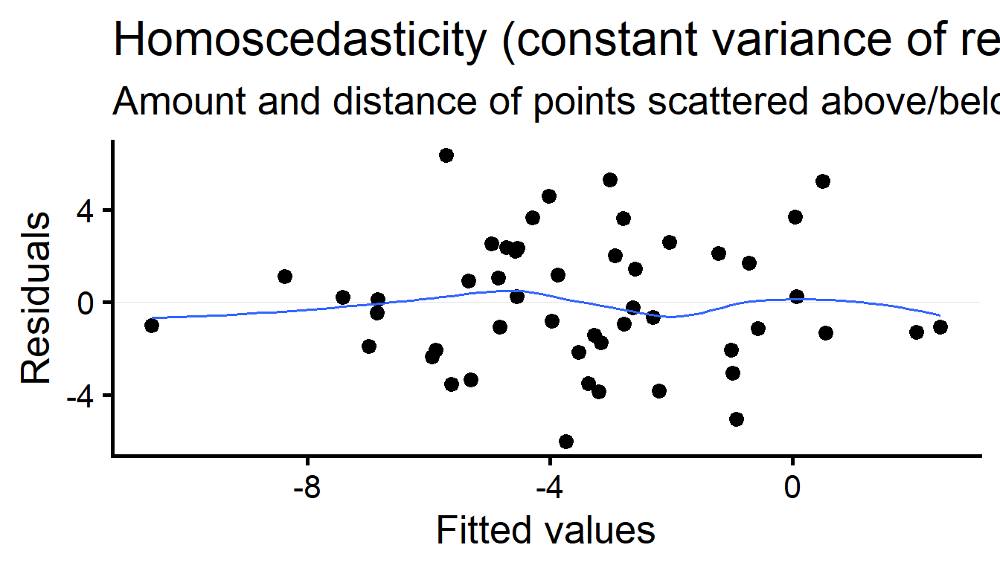
Cuadro con los coeficientes (estimados):
Estimate Std. Error t value Pr(>|t|)
(Intercept) -3.8807 0.40188 -9.6562 7.8616e-13
x1 2.8900 0.44249 6.5311 3.8537e-08El modelo nos dice que \(\beta_1\) (el tamaño de efecto de ‘x1’) es 2.89 y que es significativamente diferente de 0 (p = 3.85e-08)
Los valores simulados de los parámetros de regresión pueden compararse con el resumen del modelo lm() para tener una idea de la precisión del modelo:

“… la coordinación y la consistencia de los duetos son mayores en las especies con temporadas de apareamiento especialmente largas.”

Ejercicio 4
Aumente el tamaño de la muestra (n) a 1000 o más
¿Cómo cambiaron los estimados del tamaño de efecto (\(\beta\))?
¿Cómo cambiaron los intervalos de confianza del tamaño de efecto?
Ahora cambie n a 15 y compruebe de nuevo las estimaciones del modelo (esta vez compruebe también el valor p)
La regresión lineal múltiple es una extensión del modelo de regresión lineal simple que puede tomar varios predictores:
La fórmula parece compleja, pero sólo quiere decir que cualquier parámetro adicional tendrá su propia estimación (\(\beta\)). La fórmula para una regresión lineal de dos predictores se ve así:
… y se puede simular así (note que hacemos que ‘x2’ esté moderadamente correlacionado con ‘x1’, como suele ocurrir con los predictores en datos biológicos):
# definir semilla
set.seed(123)
# numero de observaciones
n <- 50
b0 <- -4
b1 <- 3
b2 <- -2
error <- rnorm(n = n, mean = 0, sd = 3)
# variables aleatorias
x1 <- rnorm(n = n, mean = 0, sd = 1)
x2 <- 0.5 * x1 + rnorm(n = n, mean = 0, sd = 1) # x2 correlacionado con x1
y <- b0 + b1 * x1 + b2 * x2 + error
# correlacion entre predictores
cor(x1, x2)[1] 0.29197# crear un data frame
xy_datos_multp <- data.frame(x1, x2, y)
# construir el modelo
xy_mod_multp <- lm(formula = y ~ x1 + x2, data = xy_datos_multp)
summary(xy_mod_multp)
Call:
lm(formula = y ~ x1 + x2, data = xy_datos_multp)
Residuals:
Min 1Q Median 3Q Max
-5.986 -1.893 -0.363 2.002 6.413
Coefficients:
Estimate Std. Error t value Pr(>|t|)
(Intercept) -3.865 0.417 -9.27 3.5e-12 ***
x1 2.868 0.467 6.14 1.7e-07 ***
x2 -1.932 0.414 -4.67 2.6e-05 ***
---
Signif. codes: 0 '***' 0.001 '**' 0.01 '*' 0.05 '.' 0.1 ' ' 1
Residual standard error: 2.83 on 47 degrees of freedom
Multiple R-squared: 0.498, Adjusted R-squared: 0.477
F-statistic: 23.3 on 2 and 47 DF, p-value: 9.16e-08
… graficar los tamaños de efecto:
graficar_efectos(xy_mod_multp)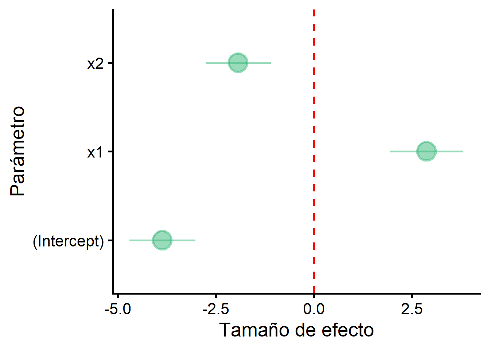
… y los gráficos diagnósticos:
plot_model(xy_mod_multp, type = "diag")[[1]]
[[2]]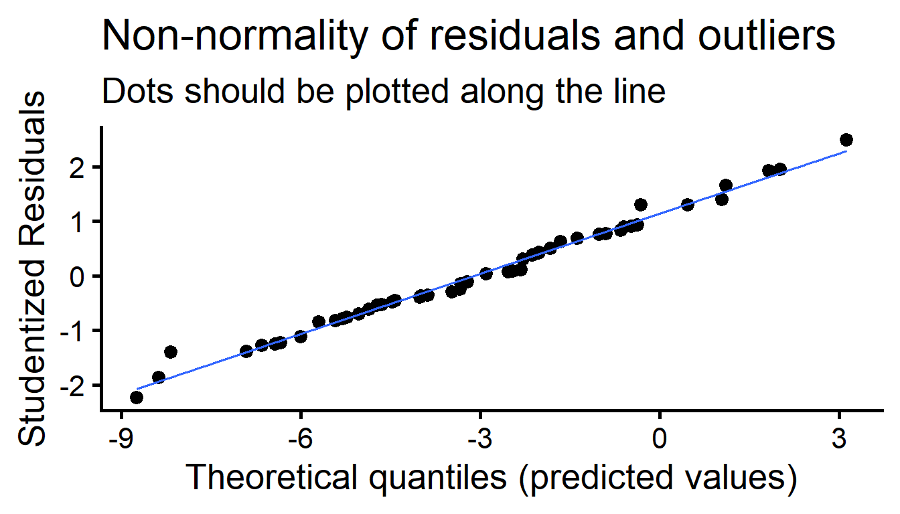
[[3]]
[[4]]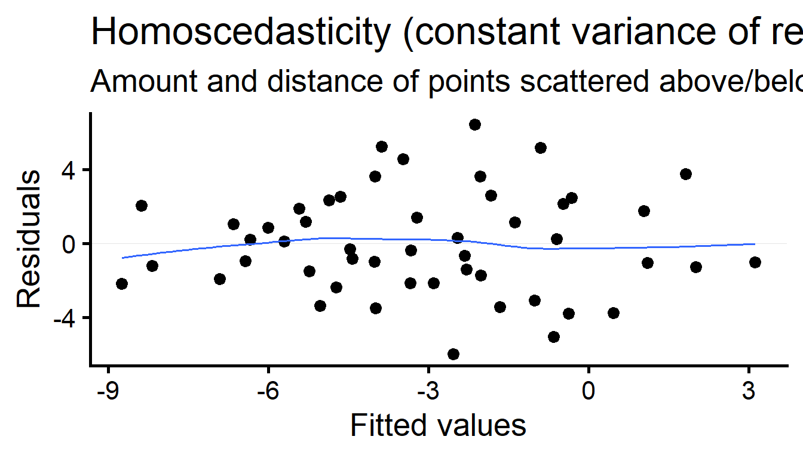
Hay un punto importante que es necesario enfatizar aquí: la regresión múltiple estima el efecto de un predictor después de tener en cuenta el efecto de los demás predictores del modelo. En otras palabras, los nuevos predictores del modelo tratarán de explicar la variación de los datos que no fue explicada por los otros predictores. Así que el resultado de la regresión múltiple no es equivalente a los resultados de las regresiones lineales simples sobre los predictores por separado. Esto puede demostrarse fácilmente corriendo esas regresiones:
# coeficientes de la regresión múltiple
coef(xy_mod_multp)(Intercept) x1 x2
-3.8652 2.8677 -1.9324 # Regresión simple de y con x1
mod_x1 <- lm(y ~ x1, data = xy_datos_multp)
coef(mod_x1)(Intercept) x1
-3.4228 2.2310 # Regresión simple de y con x2
mod_x2 <- lm(y ~ x2, data = xy_datos_multp)
coef(mod_x2)(Intercept) x2
-3.3113 -1.1904 Como vemos, los tamaños de efecto para el mismo predictor difieren bastante entre la regresión múltiple y la simple. La regresión múltiple recupera valores cercanos a los simulados (3 y -2), mientras que las regresiones simples están sesgadas: como ‘x1’ y ‘x2’ están correlacionados, cada regresión simple le atribuye a su predictor parte del efecto del predictor omitido. Por ejemplo, la regresión simple de ‘x1’ estima aproximadamente \(\beta_1 + \beta_2 \times 0.5 = 3 - 1 = 2\), ya que 0.5 es la pendiente de ‘x2’ sobre ‘x1’ en la simulación.
Esto se debe a que la regresión múltiple estima el efecto de cada predictor usando solo la parte de su variación que no está correlacionada con los otros predictores (es decir, como si fueran ortogonales entre sí). Esto lo podemos comprobar sacando los residuos de cada predictor en una regresión contra todos los otros predictores en la regresión múltiple. En nuestro caso es fácil ya que solo tenemos 2 predictores:
# Regresión de x1 sobre x2 para obtener los residuos
mod_resid_x1 <- lm(x1 ~ x2, data = xy_datos_multp)
# Obtener los residuos
xy_datos_multp$residuos_x1 <- resid(mod_resid_x1)
# Regresión de x2 sobre x1 para obtener los residuos
mod_resid_x2 <- lm(x2 ~ x1, data = xy_datos_multp)
# Obtener los residuos
xy_datos_multp$residuos_x2 <- resid(mod_resid_x2) Ahora si corremos las regresiones simples con estos residuos, los tamaños de efecto coinciden exactamente con los obtenidos en la regresión múltiple:
# Regresión de y sobre los residuos de x1
mod_resid_reg_x1 <- lm(y ~ residuos_x1, data = xy_datos_multp)
# Regresión de y sobre los residuos de x2
mod_resid_reg_x2 <- lm(y ~ residuos_x2, data = xy_datos_multp)
# Resúmenes finales de los modelos para comparar
coef(xy_mod_multp)[-1] x1 x2
2.8677 -1.9324 c(coef(mod_resid_reg_x1)[-1], coef(mod_resid_reg_x2)[-1])residuos_x1 residuos_x2
2.8677 -1.9324 Por comodidad, hemos utilizado coef() para extraer sólo los estimados de la regresión, pero los valores son los mismos que obtenemos con summary(model).
Este punto se demuestra además por el hecho de que, si uno de los predictores no tiene ninguna influencia en la respuesta, el efecto del otro predictor será prácticamente el mismo en la regresión múltiple y en la regresión lineal simple (aunque los predictores estén correlacionados). Para simular este escenario, fijamos el efecto de ‘x2’ en 0:
# definir semilla
set.seed(123)
# numero de observaciones
n <- 50
b0 <- -4
b1 <- 3
b2_cero <- 0
error <- rnorm(n = n, mean = 0, sd = 1)
# variables aleatorias
x1 <- rnorm(n = n, mean = 0, sd = 1)
x2 <- 0.5 * x1 + rnorm(n = n, mean = 0, sd = 1)
y <- b0 + b1 * x1 + b2_cero * x2 + error
# crear data frame
xy_datos_b2_cero <- data.frame(x1, x2, y)
# construir modelos
xy_mod_b2_cero <- lm(formula = y ~ x1 + x2, data = xy_datos_b2_cero)
x1y_mod_b2_cero <- lm(formula = y ~ x1, data = xy_datos_b2_cero)
# extraer solo los coeficientes
coef(xy_mod_b2_cero)(Intercept) x1 x2
-3.955064 2.955892 0.022549 coef(x1y_mod_b2_cero)(Intercept) x1
-3.9602 2.9633 El estimado de \(\beta_1\) fue casi el mismo en la regresión múltiple (2.96) y en la regresión de un solo predictor (2.96)
Cuadro con los coeficientes (estimados):
Estimate Std. Error t value Pr(>|t|)
(Intercept) -3.8652 0.41695 -9.2702 3.4856e-12
x1 2.8677 0.46742 6.1352 1.6801e-07
x2 -1.9324 0.41422 -4.6650 2.5851e-05El modelo encontró que \(\beta_1\) (el tamaño de efecto de ‘x1’) es 2.87 y que es significativamente diferente de 0 (p = 1.68e-07). Este es el efecto de ‘x1’ sobre ‘y’ una vez removida la variación explicada por ‘x2’.
También se encontró que el \(\beta_2\) (el tamaño de efecto de ‘x2’) es -1.93 y que también es significativamente diferente de 0 (p = 2.59e-05). Este es el efecto de ‘x2’ sobre ‘y’ una vez removida la variación explicada por ‘x1’.
Los valores simulados de los parámetros de regresión pueden compararse con el resumen del modelo lm() para tener una idea de la precisión del modelo:
\(\beta_1\) se fijó en 3 y se estimó como 2.87.
\(\beta_2\) (el tamaño de efecto de ‘x2’) se fijó en -2 y se estimó como -1.93.
“La memoria espacial, el tamaño corporal y el largo de la punta del pico … predijeron positivamente la probabilidad de adquirir y defender un territorio.”

Ejercicio 5
La siguiente simulación genera un par de predictores continuos altamente colineales:
# definir semilla
set.seed(123)
# numero de observaciones
n <- 30
b0 <- -4
b1 <- 3
b2 <- -2
error <- rnorm(n = n, mean = 0, sd = 1)
# variables aleatorias colineales
x1 <- rnorm(n = n, mean = 0, sd = 1)
x2 <- x1 + rnorm(n = n, mean = 0, sd = 0.2) # hacer x2 colineal con x1
y <- b0 + b1 * x1 + b2 * x2 + error
# crear data frame
xy_datos <- data.frame(x1, x2, y)
cor(x1, x2)[1] 0.97812# graficar
ggplot(data = xy_datos, aes(x = x1, y = x2)) +
geom_point(size = 3)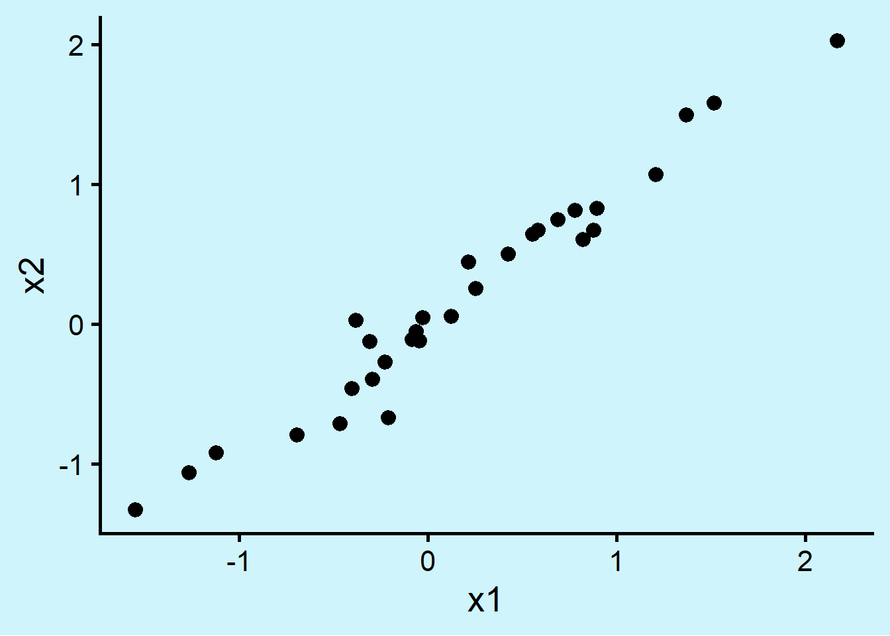
Construya un modelo lineal multiple (con lm()) con ‘y’ como respuesta y ‘x1’ y ‘x2’ como predictores
Compare los betas estimados por el modelo con los usados para generar los datos. ¿Es una buena estimación? También observe los errores estándar y los valores de p. ¿Esperaría que fueran significativos?
Realice los gráficos de diagnóstico para este modelo (plot_model(nombre_del_modelo, type = "diag")). ¿Detectan los gráficos de diagnóstico el problema de colinealidad?
Simule un juego de datos con tres predictores en los que sólo dos de ellos son altamente colineales. Ajuste un modelo de regresión múltiple (y ~ x1 + x2 + x3) para esos datos y observe cómo la colinealidad afecta (o no) a la estimación del predictor no colineal.
Para los predictores categóricos podemos crear primero una variable binaria (0, 1) y luego añadir etiquetas a cada valor:
# definir semilla
set.seed(13)
# numero de observaciones
n <- 50
b0 <- -3
b1 <- 2
error <- rnorm(n = n, mean = 0, sd = 3)
# variables aleatorias
x1_num <- sample(0:1, size = n, replace = TRUE)
y <- b0 + b1 * x1_num + error
x1 <- factor(x1_num, labels = c("a", "b"))
# crear data frame
xy_datos_cat <- data.frame(x1, x1_num, y)
head(xy_datos_cat)| x1 | x1_num | y |
|---|---|---|
| b | 1 | 0.66298 |
| a | 0 | -3.84082 |
| a | 0 | 2.32549 |
| b | 1 | -0.43804 |
| a | 0 | 0.42758 |
| a | 0 | -1.75342 |
Y así es como se escribe formalmente:
Lo mismo que con los predictores continuos.
Podemos explorar el patrón de los datos utilizando un diagrama de cajas (boxplot):
# graficar
ggplot(xy_datos_cat, aes(x = x1, y = y)) +
geom_boxplot()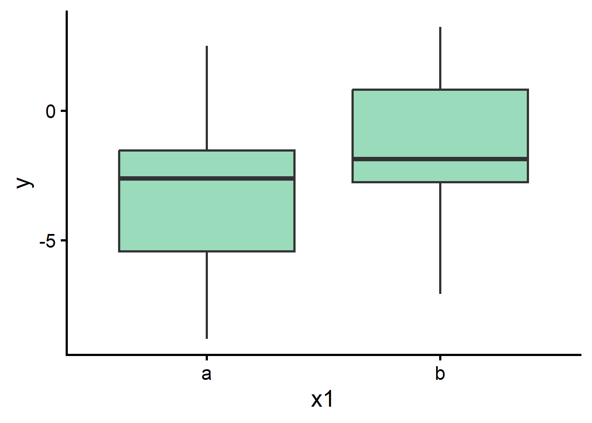
… y obtener los estimados del modelo:
# construir modelos
xy_mod_cat <- lm(formula = y ~ x1, data = xy_datos_cat)
summary(xy_mod_cat)
Call:
lm(formula = y ~ x1, data = xy_datos_cat)
Residuals:
Min 1Q Median 3Q Max
-5.898 -1.909 -0.094 1.809 5.506
Coefficients:
Estimate Std. Error t value Pr(>|t|)
(Intercept) -2.997 0.558 -5.37 2.3e-06 ***
x1b 1.814 0.842 2.16 0.036 *
---
Signif. codes: 0 '***' 0.001 '**' 0.01 '*' 0.05 '.' 0.1 ' ' 1
Residual standard error: 2.95 on 48 degrees of freedom
Multiple R-squared: 0.0882, Adjusted R-squared: 0.0693
F-statistic: 4.65 on 1 and 48 DF, p-value: 0.0362
… graficar los tamaños de efecto:
graficar_efectos(xy_mod_cat)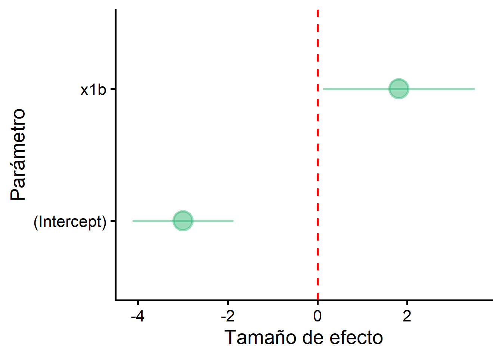
… y los gráficos diagnósticos del modelo:
plot_model(xy_mod_cat, type = "diag")[[2]]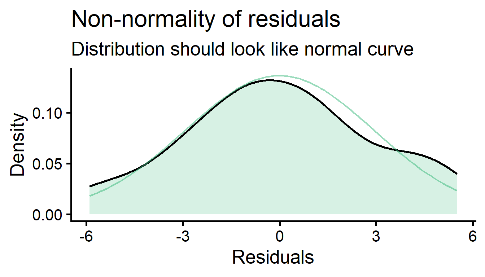
Cuadro con los coeficientes (estimados):
Estimate Std. Error t value Pr(>|t|)
(Intercept) -2.9974 0.55825 -5.3693 2.2677e-06
x1b 1.8140 0.84160 2.1554 3.6172e-02El modelo encontró que \(\beta_1\) (el tamaño de efecto de ‘x1’) es 1.81 y que es significativamente diferente de 0 (p = 0.0362)
Los valores simulados de los parámetros de regresión pueden compararse con el resumen del modelo lm() para tener una idea de la precisión del modelo:
Tenga en cuenta que en este caso el intercepto se refiere a la estimación del nivel ‘a’ en el predictor categórico, que se utilizó como base:
# graficar
ggplot(xy_datos_cat, aes(x = x1, y = y)) +
geom_boxplot() +
geom_hline(yintercept = xy_mod_cat$coefficients[1], col = "blue")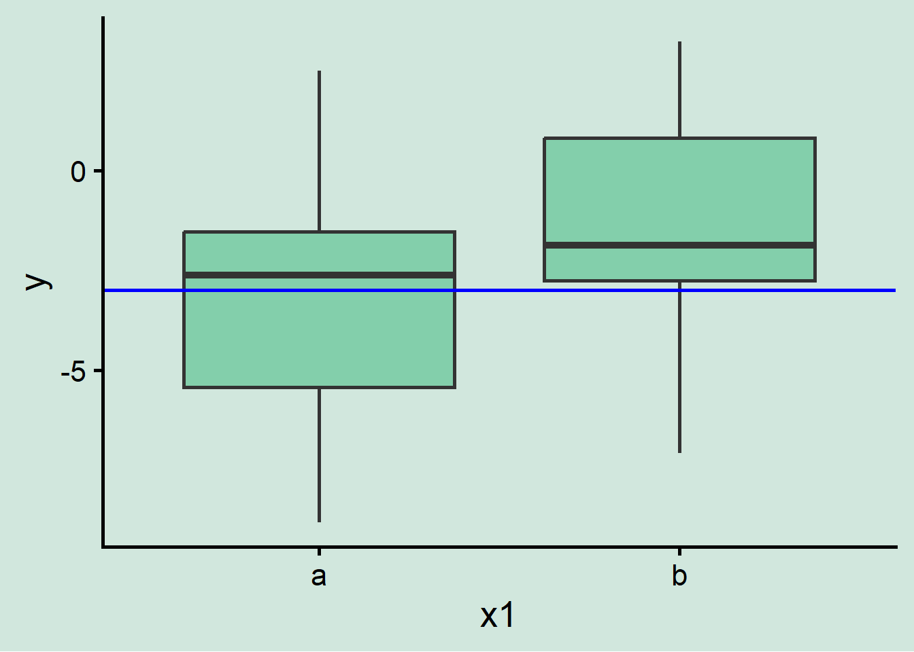
mean(xy_datos_cat$y[xy_datos_cat$x1 == "a"])[1] -2.9974
“Los machos con puntas de pico más grandes y puntiagudas tuvieron más éxito en ganar control de territorios en el lek.”

Ejercicio 6
En un modelo de regresión, los predictores categóricos también se representan como vectores numéricos. Más concretamente, los predictores categóricos se codifican como 0s y 1s, en los que 1 significa “pertenece a esta categoría” (en este caso ‘b’) y 0 “pertenece a la categoría de referencia” (en este caso ‘a’, que corresponde al intercepto). Mantuvimos el vector numérico original (‘x1_num’) al simular el juego de datos con el predictor categórico:
head(xy_datos_cat)| x1 | x1_num | y |
|---|---|---|
| b | 1 | 0.66298 |
| a | 0 | -3.84082 |
| a | 0 | 2.32549 |
| b | 1 | -0.43804 |
| a | 0 | 0.42758 |
| a | 0 | -1.75342 |
Observe que las “b” de la columna “x1” se convierten en 1 en la columna “x1_num” y las “a” se convierten en 0. Esto se denomina variable indicadora y el proceso se conoce como ‘codificación indicadora’ (dummy coding).
En realidad, podemos utilizar el vector numérico en el modelo de regresión y obtener exactamente los mismos resultados:
# resumen del modelo con la variable categórica
summary(xy_mod_cat)$coefficients Estimate Std. Error t value Pr(>|t|)
(Intercept) -2.9974 0.55825 -5.3693 2.2677e-06
x1b 1.8140 0.84160 2.1554 3.6172e-02# construir modelo con la variable indicadora
xy_mod_num <- lm(formula = y ~ x1_num, data = xy_datos_cat)
# resumen del modelo con la variable indicadora
summary(xy_mod_num)$coefficients Estimate Std. Error t value Pr(>|t|)
(Intercept) -2.9974 0.55825 -5.3693 2.2677e-06
x1_num 1.8140 0.84160 2.1554 3.6172e-02
Las cosas se complican un poco más cuando se codifica un predictor categórico con más de dos niveles. Pero la lógica es la misma: se crea una variable indicadora para cada nivel excepto el de referencia (es decir, k - 1 variables para k niveles), y cada estimado representa la diferencia entre ese nivel y el nivel de referencia.
Una interacción estadística ocurre cuando el efecto de una variable predictora sobre la respuesta depende del valor de una segunda variable predictora (es decir, el efecto está moderado o modulado por la segunda variable). Note que esto es distinto de la mediación, en la que un predictor afecta la respuesta indirectamente a través de otra variable. En la fórmula, la interacción se representa como el producto de los dos predictores:
Esto es más fácil de entender si se observa la interacción de una variable continua y una binaria:
# definir semilla
set.seed(123)
# numero de observaciones
n <- 50
b0 <- -4
b1 <- 3
b2 <- 1.7
b3 <- -3
error <- rnorm(n = n, mean = 0, sd = 3)
# variables aleatorias
x1 <- rbinom(n = n, size = 1, prob = 0.5)
x2 <- rnorm(n = n, mean = 0, sd = 1)
# interaccion se añade como el producto de x1 y x2
y <- b0 + b1 * x1 + b2 * x2 + b3 * x1 * x2 + error
x1 <- factor(x1, labels = c("a", "b"))
# crear data frame
xy_datos_intr <- data.frame(x1, x2, y)
head(xy_datos_intr)| x1 | x2 | y |
|---|---|---|
| b | 1.02557 | -4.0147 |
| a | -0.28477 | -5.1746 |
| a | -1.22072 | -1.3991 |
| b | 0.18130 | -1.0242 |
| a | -0.13889 | -3.8483 |
| b | 0.00576 | 4.1377 |
# construir modelo
# (x1 * x2 equivale a x1 + x2 + x1:x2, donde x1:x2 es el termino de interaccion)
xy_mod_intr <- lm(formula = y ~ x1 * x2, data = xy_datos_intr)
# guardar resumen para graficar lineas de mejor ajuste
xy_summ_intr <- summary(xy_mod_intr)
xy_summ_intr
Call:
lm(formula = y ~ x1 * x2, data = xy_datos_intr)
Residuals:
Min 1Q Median 3Q Max
-6.222 -1.664 -0.158 1.650 6.383
Coefficients:
Estimate Std. Error t value Pr(>|t|)
(Intercept) -4.193 0.570 -7.35 2.7e-09 ***
x1b 3.597 0.806 4.46 5.2e-05 ***
x2 1.327 0.682 1.95 0.0576 .
x1b:x2 -2.972 0.962 -3.09 0.0034 **
---
Signif. codes: 0 '***' 0.001 '**' 0.01 '*' 0.05 '.' 0.1 ' ' 1
Residual standard error: 2.83 on 46 degrees of freedom
Multiple R-squared: 0.396, Adjusted R-squared: 0.357
F-statistic: 10 on 3 and 46 DF, p-value: 3.29e-05También ayuda graficar los datos:
# graficar
ggplot(data = xy_datos_intr, aes(x = x2, y = y, color = x1)) +
geom_point(size = 3) +
geom_smooth(method = "lm", se = FALSE)
… y los tamaños de efecto:
graficar_efectos(xy_mod_intr)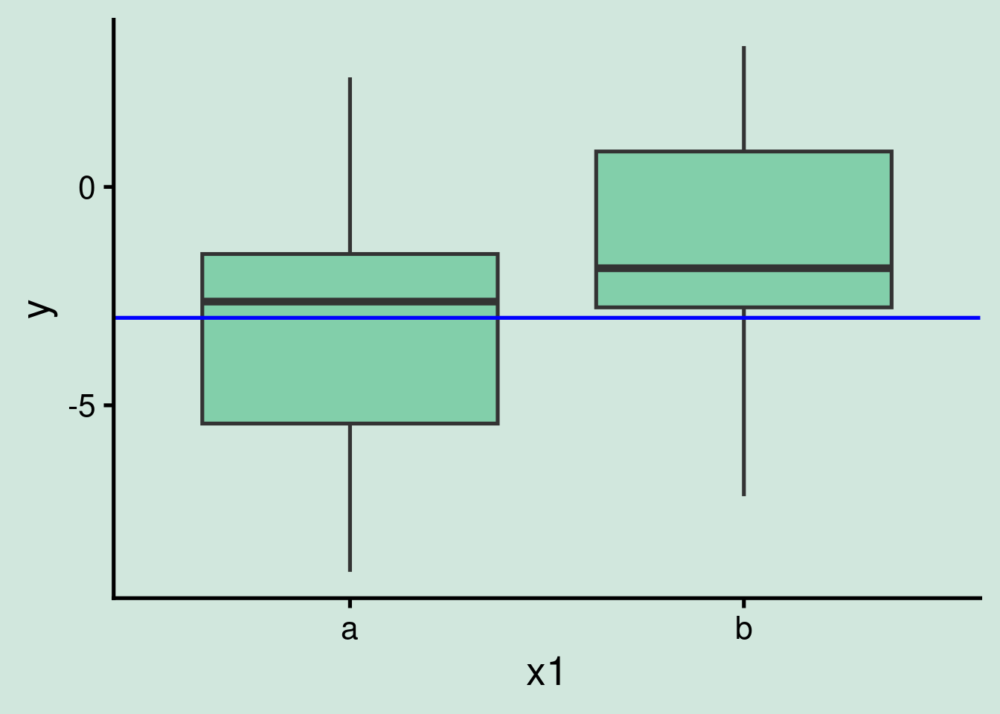
También deberíamos revisar los gráficos de diagnóstico:
plot_model(xy_mod_intr, type = "diag")[[1]]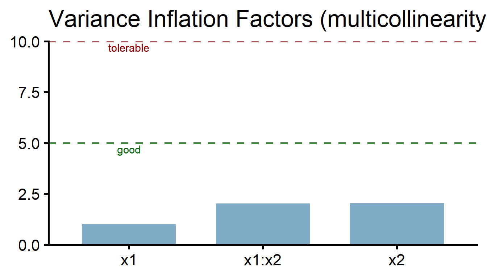
[[2]]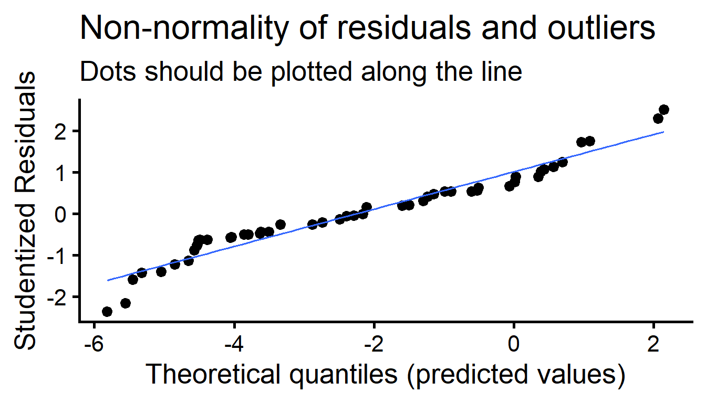
[[3]]
[[4]]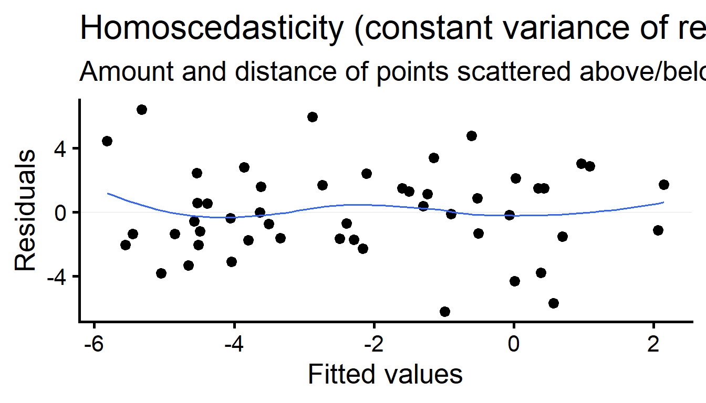
Cuadro con los coeficientes:
Estimate Std. Error t value Pr(>|t|)
(Intercept) -4.1930 0.57023 -7.3532 2.6978e-09
x1b 3.5974 0.80607 4.4629 5.1950e-05
x2 1.3274 0.68161 1.9474 5.7610e-02
x1b:x2 -2.9720 0.96227 -3.0885 3.4061e-03El modelo encontró que \(\beta_1\) (la diferencia entre ‘x1 = b’ y ‘x1 = a’) es 3.6 y que es significativamente diferente de 0 (p = 5.19e-05). Cuando hay una interacción, este efecto es condicional: es la diferencia entre las categorías cuando x2 = 0. Para otros valores de x2 la diferencia entre ‘a’ y ‘b’ cambia (eso es justamente lo que significa la interacción)
El modelo encontró que \(\beta_2\) (el tamaño de efecto de ‘x2’) es 1.33 y que no es significativamente diferente de 0 (p = 0.0576). Esto es en realidad la pendiente de la relación entre x2 e y cuando x1 = ‘a’ (la categoría de referencia)
El modelo encontró que \(\beta_3\) (el tamaño de efecto del término de interacción ‘x1:x2’) es -2.97 y que es significativamente diferente de 0 (p = 0.00341). Esta es la diferencia entre las pendientes de x2 vs y cuando x1 = ‘b’ y cuando x1 = ‘a’. Por lo tanto, la pendiente de x2 cuando x1 = ‘b’ es \(\beta_2 + \beta_3\) = -1.64
Los valores simulados para los parámetros de regresión pueden compararse con el resumen del modelo lm() para tener una idea de la precisión del modelo:
\(\beta_1\) se simuló con un valor de 3 y se estimó en 3.6
\(\beta_2\) se simuló con un valor de 1.7 y se estimó en 1.33
\(\beta_3\) se simuló con un valor de -3 y se estimó en -2.97
“El aumento de la luz de la luna disminuye la actividad vocal de Agalychnis lemur aunque esta relación depende de la temperatura.”

Los ecólogos utilizan habitualmente modelos estadísticos para detectar y explicar interacciones entre factores ecológicos, con el objetivo de evaluar si un efecto de interés cambia de signo o magnitud en distintos contextos. El artículo trata de los peligros de interpretar las interacciones estadísticas sin prestar atención a su propiedad fundamental de simetría, o a la escala de medida, ya sea aditiva o multiplicativa. Acá pueden acceder al artículo.

Ejercicio 7
Modifique el código usado para simular un único predictor asociado aumentando gradualmente el error. Esto se hace aumentando el argumento ‘sd’ en error <- rnorm(n = n, sd = 3).
Mire cómo los errores más grandes afectan la inferencia (debe volver a correr los modelos)
Ahora reemplace el término de error con error <- rexp(n = n, rate = 0.2) - 5. Esto crea un error con una distribución exponencial (por lo tanto asimétrica y no normal). Le restamos 5 (el promedio de esa distribución exponencial, 1 / rate) para que el error tenga promedio 0 como en el modelo original; así cualquier diferencia se deberá a la forma de la distribución y no a un cambio en el promedio. Se supone que esto es problemático para el poder inferencial de estos modelos. Compare las estimaciones que obtuvo con los valores de la simulación (‘b0’ y ‘b1’). Explore la distribución de los residuos (plot_model(nombre_del_modelo, type = "diag")) para los modelos de error ‘normal’ y ‘exponencial’.
¿Qué pasa con el estimado del intercepto si no se le resta 5 al error exponencial? ¿Por qué?
y ~ x1) y aumente n a 1000. ¿Desaparece el sesgo en el estimado de ‘x1’ al aumentar el tamaño de muestra? ¿Por qué?
Los GLM nos permiten modelar la asociación a variables respuesta que no siguen una distribución normal. Además, permiten modelar distribuciones que se asemejan más al proceso que generó los datos. El siguiente código crea un juego de datos con una respuesta que representa cuentas (por lo tanto, no normal):
# Simulación de datos
set.seed(123) # Para reproducibilidad
n <- 100 # Número de observaciones
x1 <- rnorm(n) # Predictor 1: variable normal
x2 <- rnorm(n) # Predictor 2: variable normal
# Coeficientes reales para la simulación
b0 <- 0.5 # Intercepto
b1 <- 1.2 # Coeficiente para x1
b2 <- -0.8 # Coeficiente para x2
# Calcular lambda (tasa de eventos) utilizando la combinación lineal de los predictores
# En el modelo de Poisson, la tasa esperada lambda está relacionada exponencialmente con los predictores
log_lambda <- b0 + b1 * x1 + b2 * x2
lambda <- exp(log_lambda) # Lambda debe ser positiva, por eso usamos exp()
# Generar la variable respuesta (cuentas) a partir de la distribución de Poisson
y <- rpois(n, lambda)
# Crear un data frame
xy_datos_pois <- data.frame(x1 = x1, x2 = x2, y = y)
# Mostrar las primeras filas del data frame
head(xy_datos_pois)| x1 | x2 | y |
|---|---|---|
| -0.56048 | -0.71041 | 5 |
| -0.23018 | 0.25688 | 0 |
| 1.55871 | -0.24669 | 17 |
| 0.07051 | -0.34754 | 2 |
| 0.12929 | -0.95162 | 4 |
| 1.71506 | -0.04503 | 15 |
También grafiquemos ‘x1’ vs ‘y’:
# graficar
ggplot(xy_datos_pois, aes(x = x1, y = y)) +
geom_point() 
La relación no parece muy lineal ni la varianza parece ser constante a través de ‘x1’.
Podemos relajar el requisito de la distribución normal con GLMs. glm() es una función básica de R que nos ayuda a hacer el truco. Para este ejemplo la distribución más apropiada es Poisson. Esto se puede establecer en el argumento family así:
glm_pois <- glm(formula = y ~ x1 + x2, data = xy_datos_pois, family = poisson())
Que es equivalente a esto:
Es decir, la respuesta sigue una distribución de Poisson cuyo promedio (\(\lambda\)) se relaciona con los predictores a través de una función de enlace logarítmica. Por eso los estimados están en escala logarítmica.
Como puede ver el único argumento extra comparado con lm() es family. El resto es simplemente la “fórmula” y los “datos” con los que ya estamos familiarizados. Así que, de nuevo, podemos aprovechar nuestros conocimientos sobre los modelos lineales para extenderlos a estructuras de datos más complejas.
También necesitamos ejecutar summary() para obtener el resultado del modelo:
summary(glm_pois)
Call:
glm(formula = y ~ x1 + x2, family = poisson(), data = xy_datos_pois)
Coefficients:
Estimate Std. Error z value Pr(>|z|)
(Intercept) 0.4377 0.0867 5.05 4.4e-07 ***
x1 1.2092 0.0565 21.40 < 2e-16 ***
x2 -0.8040 0.0582 -13.80 < 2e-16 ***
---
Signif. codes: 0 '***' 0.001 '**' 0.01 '*' 0.05 '.' 0.1 ' ' 1
(Dispersion parameter for poisson family taken to be 1)
Null deviance: 920.85 on 99 degrees of freedom
Residual deviance: 110.28 on 97 degrees of freedom
AIC: 347.4
Number of Fisher Scoring iterations: 5
Cuadro de los coeficientes (estimados):
Estimate Std. Error z value Pr(>|z|)
(Intercept) 0.43769 0.086656 5.0509 4.3971e-07
x1 1.20915 0.056501 21.4007 1.3161e-101
x2 -0.80402 0.058242 -13.8049 2.3824e-43El modelo nos dice que \(\beta_1\) (el tamaño de efecto de ‘x1’) es 1.21 y que es significativamente diferente de 0 (p = 1.32e-101). Como el estimado está en escala logarítmica, se interpreta como que un aumento de 1 unidad de ‘x1’ multiplica la tasa esperada de ‘y’ por un factor de exp(1.21) = 3.35.
El modelo también nos dice que \(\beta_2\) (el tamaño de efecto de ‘x2’) es -0.804 y que es significativamente diferente de 0 (p = 2.38e-43). Esto significa que un aumento en 1 unidad de ‘x2’ multiplica la tasa esperada de ‘y’ por un factor de exp(-0.804) = 0.448 (es decir, la disminuye).
Los valores simulados pueden compararse con los estimados: \(\beta_1\) se fijó en 1.2 y se estimó como 1.21; \(\beta_2\) se fijó en -0.8 y se estimó como -0.804.
“La riqueza de especies de mariposas es de tres a cuatro veces mayor cuando aumenta el hábitat natural en el paisaje circundante (en un radio de 2 km), mientras que la abundancia de mariposas se asociaba negativamente con el aumento del tiempo transcurrido desde el último incendio.”

Ejercicio 8
lm() (con una distribución gaussiana), compare los resultados y compruebe los residuos (plot_model(nombre_del_modelo, type = "diag"))Existen muchas otras funciones de distribución y enlace:

A veces nuestros conjuntos de datos incluyen estructuras con varios niveles de organización. Por ejemplo, cuando tomamos muestras de varios individuos de diferentes poblaciones. En esos casos, la variación en el nivel estructural superior (poblaciones) podría impedir la detección de patrones en el nivel inferior (individuos).
Vamos a simular algunos datos que se asemejan a ese escenario. Tenemos un predictor continuo (x1) y una respuesta continua (y). Cada muestra procede de 1 de 8 poblaciones diferentes (poblacion). Cada población tiene su propio intercepto, que se desvía del intercepto general (\(\beta_0\)) por una cantidad aleatoria tomada de una distribución normal (esto es justamente lo que asume un modelo mixto con intercepto aleatorio). Además, las poblaciones con interceptos más altos tienden a tener valores más bajos de x1 (por ejemplo, poblaciones en sitios más fríos podrían tener individuos más pequeños pero con mayores valores de la respuesta):
# definir semilla
set.seed(10)
# numero de observaciones
n <- 300
n_pob <- 8
b0 <- 1
b1 <- 1.3
sd_pob <- 4
# asignar cada observacion a una poblacion
poblacion <- sample(1:n_pob, size = n, replace = TRUE)
# desviacion aleatoria del intercepto para cada poblacion
b_pob <- rnorm(n = n_pob, mean = 0, sd = sd_pob)
error <- rnorm(n = n, mean = 0, sd = 2)
# variables aleatorias (x1 es menor en poblaciones con intercepto alto)
x1 <- rnorm(n = n, mean = -b_pob[poblacion] / 4, sd = 1)
y <- b0 + b_pob[poblacion] + b1 * x1 + error
# convertir a letras
poblacion <- letters[poblacion]
# crear juego de datos
xy_datos_mixto <- data.frame(x1, y, poblacion)
head(xy_datos_mixto, 10)| x1 | y | poblacion |
|---|---|---|
| -0.26814 | 2.87264 | c |
| 0.03116 | -3.68392 | a |
| -0.47909 | 0.68405 | b |
| 0.60174 | 5.28347 | h |
| 0.77869 | -0.40450 | d |
| 0.49753 | 2.68331 | g |
| -1.16918 | 3.20227 | h |
| 0.82756 | -8.56288 | f |
| 2.09181 | 8.07295 | g |
| -1.35252 | -1.25931 | g |
Podemos explorar la relación entre ‘y’ y ‘x1’ con un gráfico:
ggplot(data = xy_datos_mixto, aes(x = x1, y = y)) +
geom_point()
¿Puede ver claramente el patrón de asociación entre las dos variables que hemos utilizado para simular los datos? Podemos seguir explorando los datos con un modelo de regresión lineal simple:
lm_mixto <- lm(y ~ x1, data = xy_datos_mixto)
summary(lm_mixto)
Call:
lm(formula = y ~ x1, data = xy_datos_mixto)
Residuals:
Min 1Q Median 3Q Max
-10.181 -2.385 -0.177 2.453 10.501
Coefficients:
Estimate Std. Error t value Pr(>|t|)
(Intercept) 0.420 0.214 1.96 0.051 .
x1 -0.716 0.141 -5.07 7e-07 ***
---
Signif. codes: 0 '***' 0.001 '**' 0.01 '*' 0.05 '.' 0.1 ' ' 1
Residual standard error: 3.67 on 298 degrees of freedom
Multiple R-squared: 0.0794, Adjusted R-squared: 0.0763
F-statistic: 25.7 on 1 and 298 DF, p-value: 7e-07
A pesar de haber simulado un \(\beta_1\) positivo (1.3), este modelo estima una asociación negativa (-0.716). Esta inferencia errónea se debe a que estamos ignorando una característica importante de nuestros datos, la agrupación de las muestras en “poblaciones”.
Los modelos de efectos mixtos (también conocidos como modelos multinivel o modelos de efectos variables) pueden ayudarnos a tener en cuenta estas características adicionales, mejorando significativamente nuestro poder de inferencia. Coloreemos cada una de las poblaciones para ver cómo covarían las variables en cada subgrupo de datos:
ggplot(data = xy_datos_mixto, aes(x = x1, y = y, color = poblacion)) +
geom_point()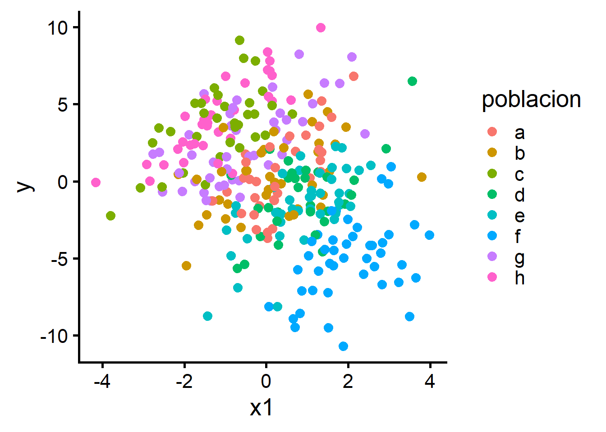
Dentro de cada población parece haber un patrón claro de asociación positiva entre x1 e y, aunque al juntar todas las poblaciones la tendencia es negativa. El patrón se hace un poco más evidente si mostramos cada población en su propio panel:
ggplot(data = xy_datos_mixto, aes(x = x1, y = y, color = poblacion)) +
geom_point() +
facet_wrap( ~ poblacion) +
geom_smooth(method = "lm", se = FALSE) 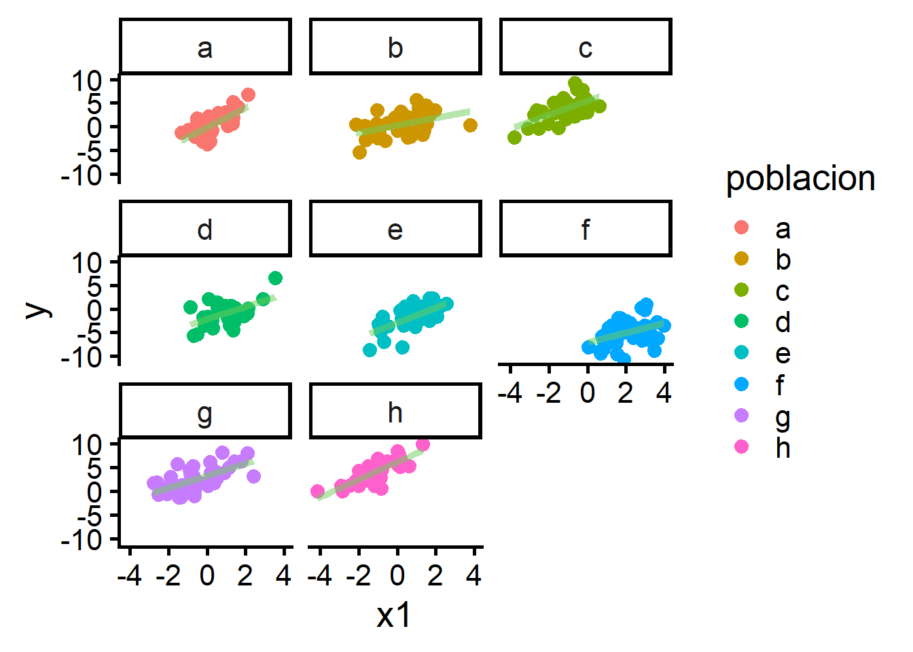
Construyamos un modelo de efectos mixtos utilizando la población como intercepto variable:
mix_eff_mod <- lmer(formula = y ~ x1 + (1 | poblacion), data = xy_datos_mixto)Que es equivalente a esto:
Podemos ver el resultado del modelo igual que con un modelo lm():
summary(mix_eff_mod)Linear mixed model fit by REML. t-tests use Satterthwaite's method [
lmerModLmerTest]
Formula: y ~ x1 + (1 | poblacion)
Data: xy_datos_mixto
REML criterion at convergence: 1320.7
Scaled residuals:
Min 1Q Median 3Q Max
-2.815 -0.642 0.036 0.721 2.336
Random effects:
Groups Name Variance Std.Dev.
poblacion (Intercept) 20.05 4.48
Residual 4.19 2.05
Number of obs: 300, groups: poblacion, 8
Fixed effects:
Estimate Std. Error df t value Pr(>|t|)
(Intercept) 0.188 1.588 6.931 0.12 0.91
x1 1.327 0.112 293.809 11.82 <2e-16 ***
---
Signif. codes: 0 '***' 0.001 '**' 0.01 '*' 0.05 '.' 0.1 ' ' 1
Correlation of Fixed Effects:
(Intr)
x1 -0.012
El modelo detectó correctamente el patrón simulado y la estimación de \(\beta_1\) (1.33) es muy cercana al valor simulado (1.3).
Cuadro con los coeficientes (estimados):
Estimate Std. Error df t value Pr(>|t|)
(Intercept) 0.18798 1.5878 6.9305 0.11839 9.0912e-01
x1 1.32658 0.1122 293.8085 11.82292 1.2060e-26
El modelo encontró que \(\beta_1\) (el tamaño de efecto de ‘x1’) es 1.33 y que es significativamente diferente de 0 (p = 1.21e-26)
Los valores simulados de los parámetros de regresión pueden compararse con el resumen del modelo lmer() para tener una idea de la precisión del modelo:
El modelo estimó que la desviación estándar de los interceptos entre poblaciones (\(\sigma_{grupo}\)) es 4.48 (simulada: 4). Este valor aparece en la sección ‘Random effects’ del resumen del modelo y también se puede obtener con VarCorr():
VarCorr(mix_eff_mod) Groups Name Std.Dev.
poblacion (Intercept) 4.48
Residual 2.05 ranef(mix_eff_mod)$poblacion| (Intercept) | |
|---|---|
| a | -0.15324 |
| b | -0.07488 |
| c | 5.03877 |
| d | -2.36556 |
| e | -2.89879 |
| f | -7.90699 |
| g | 3.04522 |
| h | 5.31546 |
# unir desviaciones estimadas y simuladas
data.frame(estimada = ranef(mix_eff_mod)$poblacion[, 1],
simulada = b_pob[match(rownames(ranef(mix_eff_mod)$poblacion), letters)])| estimada | simulada |
|---|---|
| -0.15324 | -1.56442 |
| -0.07488 | -0.99947 |
| 5.03877 | 4.62042 |
| -2.36556 | -3.45891 |
| -2.89879 | -3.46671 |
| -7.90699 | -9.28407 |
| 3.04522 | 2.43532 |
| 5.31546 | 4.60002 |
var(ranef(...))) no es igual a la varianza estimada por el modelo (VarCorr()), por lo que para reportar la variación entre grupos se debe usar esta última.
“… el tamaño corporal mostró una correlación negativa con la frecuencia baja del canto.”

La paradoja de Simpson es un fenómeno en estadística en el que una tendencia aparece en varios grupos de datos pero desaparece o se invierte cuando se combinan los grupos. Se ha utilizado para ilustrar el tipo de resultados engañosos que puede generar el ignorar la estructura en los datos y las relaciones causales entre variables.

Tomado de wikipedia
Los datos que simulamos en la sección anterior son un ejemplo de la paradoja de Simpson: dentro de cada población la asociación entre x1 e y es positiva, pero al ignorar las poblaciones la asociación es negativa. Esto ocurre porque el predictor (x1) está correlacionado con el grupo. La estructura de los datos debido a observaciones pertenecientes al mismo grupo puede ser tomada en cuenta usando el grupo como un factor aleatorio, tal y como se hizo en el ejemplo anterior.

Este modelo básico incluye una distribución para la respuesta (familia) y una función de enlace (\(g\)). Cuando la familia es gausiana (i.e. normal) y el enlace es la identidad (i.e. \(g(\hat{Y}) = \hat{Y}\)) equivale a un modelo lineal y cuando no, a un modelo lineal generalizado
Cuando el \(\beta_{grupo}\) es diferente entre grupos (i.e. cuando el intercepto difiere entre grupos) es un modelo mixto con intercepto variable (i.e. aleatorio)
Este manual solo pretende sugerir un abordaje estadístico centrado en los modelos de regresión desde el cual se pueden llevar a cabo adecuadamente la mayoría de los análisis estadísticos que usamos en investigación. El manual no tiene como objetivo explicar en detalle las particularidades de los modelos generalizados y mixtos. Note que estos modelos, principalmente los mixtos, pueden adaptarse a otras estructuras de datos más complejas no cubiertas aquí, como lo son las pendientes aleatorias, pendientes e interceptos aleatorios, estructuras de correlación (i.e. autocorrelación espacial o temporal, pedigrís o árboles filogenéticos), medidas repetidas y la pseudoreplicación, entre otras.
Spake, R., Bowler, D. E., Callaghan, C. T., Blowes, S. A., Doncaster, C. P., Antao, L. H., … & Chase, J. M. (2023). Understanding ‘it depends’ in ecology: a guide to hypothesising, visualising and interpreting statistical interactions. Biological Reviews.
Harrison, X. A., Donaldson, L., Correa-Cano, M. E., Evans, J., Fisher, D. N., Goodwin, C. E., & Inger, R. (2018). A brief introduction to mixed effects modelling and multi-model inference in ecology. PeerJ, 6, e4794.
─ Session info ───────────────────────────────────────────────────────────────
setting value
version R version 4.6.1 (2026-06-24 ucrt)
os Windows 11 x64 (build 22631)
system x86_64, mingw32
ui RTerm
language (EN)
collate Spanish_Costa Rica.utf8
ctype Spanish_Costa Rica.utf8
tz America/Costa_Rica
date 2026-10-05
pandoc 3.8.3 @ C:\\Program Files\\RStudio\\resources\\app\\bin\\quarto\\bin\\tools/ (via rmarkdown)
quarto NA
─ Packages ───────────────────────────────────────────────────────────────────
package * version date (UTC) lib source
abind 1.4-8 2024-09-12 [1] CRAN (R 4.6.0)
boot 1.3-32 2025-08-29 [2] CRAN (R 4.6.1)
cachem 1.1.0 2024-05-16 [1] CRAN (R 4.6.1)
car 3.1-5 2026-02-03 [1] CRAN (R 4.6.1)
carData 3.0-6 2026-01-30 [1] CRAN (R 4.6.1)
cli 3.6.6 2026-04-09 [1] CRAN (R 4.6.1)
crayon 1.5.3 2024-06-20 [1] CRAN (R 4.6.1)
devtools 2.5.2 2026-04-30 [1] CRAN (R 4.6.1)
digest 0.6.39 2025-11-19 [1] CRAN (R 4.6.1)
dplyr 1.2.1 2026-04-03 [1] CRAN (R 4.6.1)
ellipsis 0.3.3 2026-04-04 [1] CRAN (R 4.6.1)
evaluate 1.0.5 2025-08-27 [1] CRAN (R 4.6.1)
farver 2.1.2 2024-05-13 [1] CRAN (R 4.6.1)
fastmap 1.2.0 2024-05-15 [1] CRAN (R 4.6.1)
Formula 1.2-6 2026-08-03 [1] CRAN (R 4.6.1)
fs 2.1.0 2026-04-18 [1] CRAN (R 4.6.1)
generics 0.1.4 2025-05-09 [1] CRAN (R 4.6.1)
ggplot2 * 4.0.3 2026-04-22 [1] CRAN (R 4.6.1)
glue 1.8.1 2026-04-17 [1] CRAN (R 4.6.1)
gridExtra 2.3.1 2026-06-25 [1] CRAN (R 4.6.1)
gtable 0.3.6 2024-10-25 [1] CRAN (R 4.6.1)
htmltools 0.5.9 2025-12-04 [1] CRAN (R 4.6.1)
htmlwidgets 1.6.4 2023-12-06 [1] CRAN (R 4.6.1)
insight 1.5.2 2026-06-28 [1] CRAN (R 4.6.1)
jsonlite 2.0.0 2025-03-27 [1] CRAN (R 4.6.1)
knitr * 1.51 2025-12-20 [1] CRAN (R 4.6.1)
labeling 0.4.3 2023-08-29 [1] CRAN (R 4.6.0)
lattice 0.22-9 2026-02-09 [2] CRAN (R 4.6.1)
lifecycle 1.0.5 2026-01-08 [1] CRAN (R 4.6.1)
lme4 * 2.0-6 2026-07-16 [1] CRAN (R 4.6.1)
lmerTest * 3.2-1 2026-03-05 [1] CRAN (R 4.6.1)
magrittr 2.0.5 2026-04-04 [1] CRAN (R 4.6.1)
MASS 7.3-65 2025-02-28 [2] CRAN (R 4.6.1)
Matrix * 1.7-5 2026-03-21 [2] CRAN (R 4.6.1)
memoise 2.0.1 2021-11-26 [1] CRAN (R 4.6.1)
mgcv 1.9-4 2025-11-07 [2] CRAN (R 4.6.1)
minqa 1.2.8 2024-08-17 [1] CRAN (R 4.6.1)
nlme 3.1-169 2026-03-27 [2] CRAN (R 4.6.1)
nloptr 2.2.1 2025-03-17 [1] CRAN (R 4.6.1)
numDeriv 2016.8-1.1 2019-06-06 [1] CRAN (R 4.6.0)
otel 0.2.0 2025-08-29 [1] CRAN (R 4.6.1)
packrat 0.9.3 2025-06-16 [1] CRAN (R 4.6.1)
pillar 1.11.1 2025-09-17 [1] CRAN (R 4.6.1)
pkgbuild 1.4.8 2025-05-26 [1] CRAN (R 4.6.1)
pkgconfig 2.0.3 2019-09-22 [1] CRAN (R 4.6.1)
pkgload 1.5.3 2026-06-15 [1] CRAN (R 4.6.1)
purrr 1.2.2 2026-04-10 [1] CRAN (R 4.6.1)
R6 2.6.1 2025-02-15 [1] CRAN (R 4.6.1)
rbibutils 2.4.1 2026-01-21 [1] CRAN (R 4.6.1)
RColorBrewer 1.1-3 2022-04-03 [1] CRAN (R 4.6.0)
Rcpp 1.1.2 2026-07-05 [1] CRAN (R 4.6.1)
Rdpack 2.6.6 2026-02-08 [1] CRAN (R 4.6.1)
reformulas 0.4.4 2026-02-02 [1] CRAN (R 4.6.1)
remotes 2.5.0 2024-03-17 [1] CRAN (R 4.6.1)
rlang 1.3.0 2026-07-05 [1] CRAN (R 4.6.1)
rmarkdown 2.32 2026-09-01 [1] CRAN (R 4.6.1)
S7 0.2.2 2026-04-22 [1] CRAN (R 4.6.1)
scales 1.4.0 2025-04-24 [1] CRAN (R 4.6.1)
sessioninfo 1.2.4 2026-06-04 [1] CRAN (R 4.6.1)
sjPlot * 2.9.0 2025-07-10 [1] CRAN (R 4.6.1)
sketchy 1.0.5 2025-01-16 [1] CRAN (R 4.6.1)
stringi 1.8.9 2026-08-04 [1] CRAN (R 4.6.1)
stringr 1.6.0 2025-11-04 [1] CRAN (R 4.6.1)
tibble 3.3.1 2026-01-11 [1] CRAN (R 4.6.1)
tidyselect 1.2.1 2024-03-11 [1] CRAN (R 4.6.1)
usethis 3.2.1 2025-09-06 [1] CRAN (R 4.6.1)
vctrs 0.7.3 2026-04-11 [1] CRAN (R 4.6.1)
viridis * 0.6.5 2024-01-29 [1] CRAN (R 4.6.1)
viridisLite * 0.4.3 2026-02-04 [1] CRAN (R 4.6.1)
withr 3.0.3 2026-06-19 [1] CRAN (R 4.6.1)
xaringanExtra 0.8.0 2024-05-19 [1] CRAN (R 4.6.1)
xfun 0.60 2026-07-09 [1] CRAN (R 4.6.1)
yaml 2.3.12 2025-12-10 [1] CRAN (R 4.6.1)
[1] C:/Users/Biologia-UCR/AppData/Local/R/win-library/4.6
[2] C:/Program Files/R/R-4.6.1/library
* ── Packages attached to the search path.
──────────────────────────────────────────────────────────────────────────────